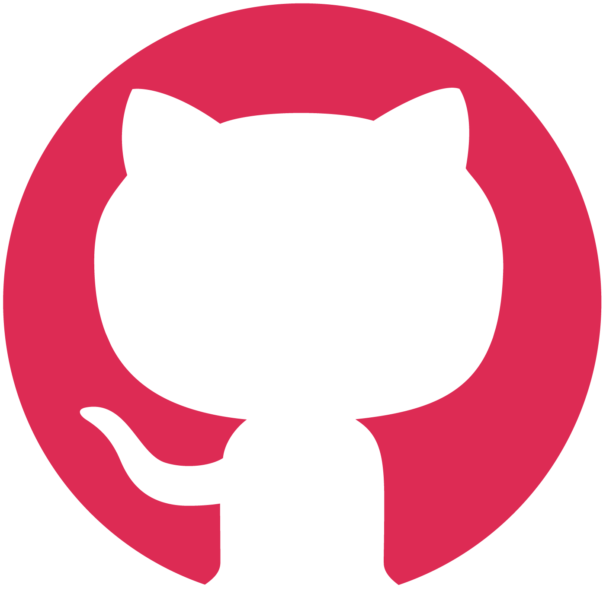
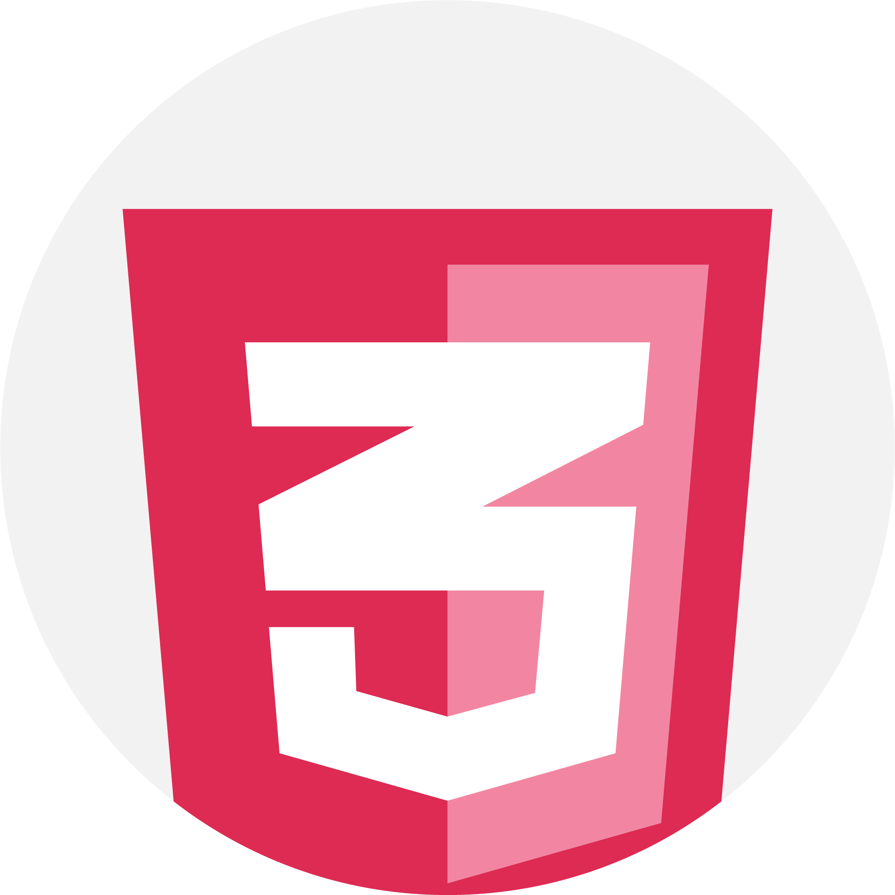

Yadira Stubbs
Kinks N Curls
VANCOUVER, BRITISH COLUMBIA. 2018. ROLE: DESIGNER/DEVELOPER.
Kinks N' Curls is a fictional hair company based in Vancouver, BC, that specializes in hair braiding, weaves, locs, and a reseller of hair extensions. My partner and I wanted to have a hippie-themed website using elements such as watercolor, flowers, curves, fonts, and colors that was able to give a hippie feel to users that are viewing the website.
TOOLKIT

- 
- 


Branding
Our branding is focused on illustrating the theme of the website, which is a Hippie-themed website. We wanted all elements of the design to be natural, simple, graceful, subtle, and elegant. The branding is aimed specifically to women in the natural hair community that struggle with taking care of their hair.
Color Palette
For our branding, We decided to use colors, fonts and shapes that were natural and subtle. The final colors we used were earthy, floral colors that gives a peaceful, hippie feel to users.
#DC8282
#fff
#C7B299
#000000
Planning and Development
For planning and development, my team member and I created a few design mockups that was helpful in helping us to figure out where everything would lay. We planned to include imagery of women with kinky curly textured hair and also images that incorporated flowers and hippie elements. We managed all coding and files through Slack and Github, as well as Google Docs.
Final Design

Responsive Design